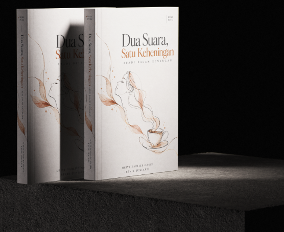
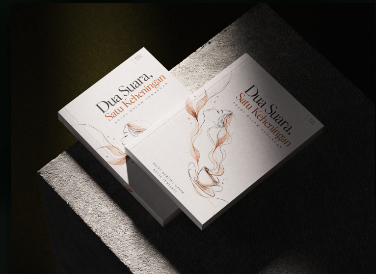
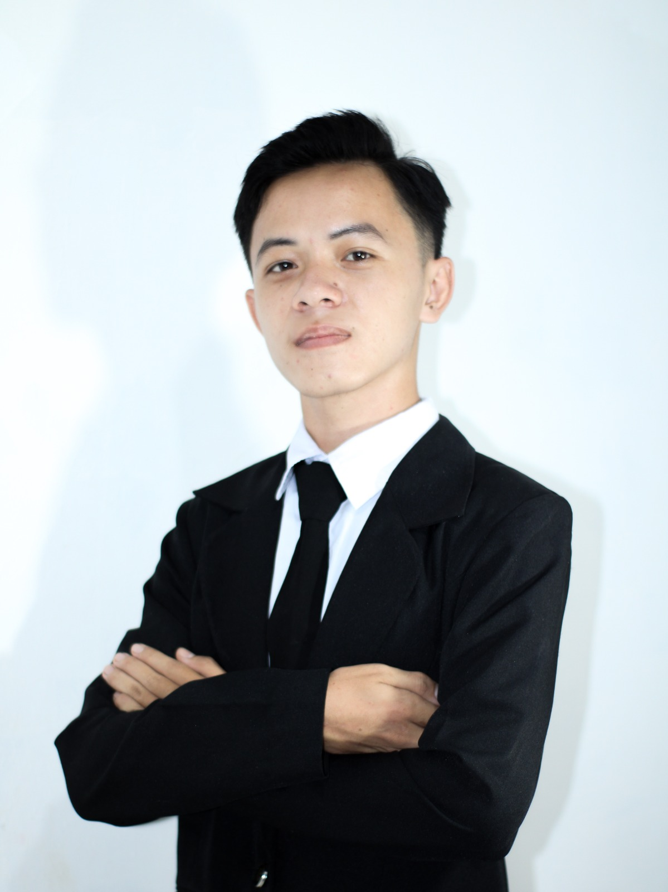
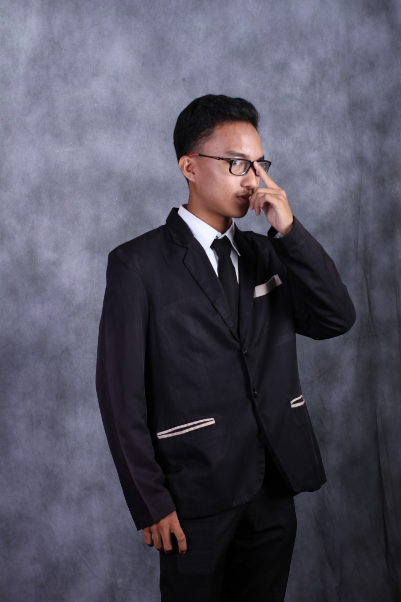
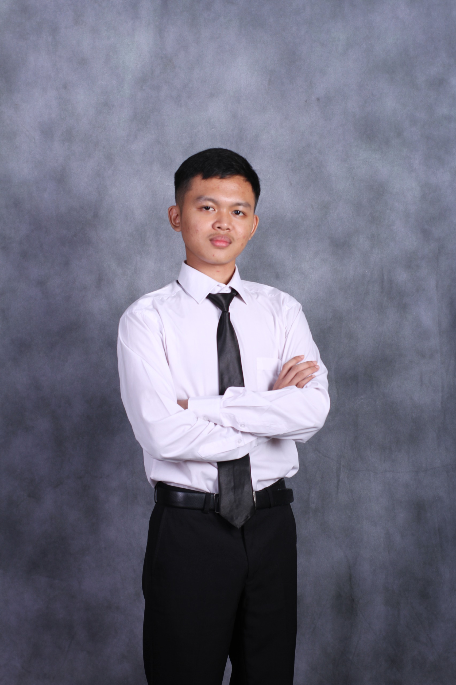

Sebuah karya sastra penuh perenungan karya Meiyi Darlies Gasim yang mempertemukan keindahan bait puisi dengan kedalaman makna batin. Dipersembahkan sebagai bagian dari eksplorasi budaya digital bersama narasivisual.id.

Azaelia Gallery hadir sebagai wadah kurasi seni dan sastra independen yang mendokumentasikan nilai-nilai estetika mendalam dari ranah budaya serta karya tulis pilihan.
Merangkai kata-kata menjadi ruang refleksi bagi pembaca untuk menyelami ketenangan di tengah keramaian dunia.
Menampilkan desain sampul dan tata letak berstandar tinggi yang digarap langsung oleh praktisi seni profesional.
Terhubung langsung dengan ekosistem pelestarian budaya digital narasivisual.id untuk memperluas jangkauan literasi.
Azaelia Gallery lahir dari perpaduan tiga nama, yaitu Azka, Rachael, dan Ali. Ketiganya disatukan menjadi sebuah identitas yang merepresentasikan kebersamaan, kreativitas, dan visi untuk menciptakan sesuatu yang memiliki nilai serta keindahan. Nama Azaelia bukan sekadar gabungan nama, melainkan simbol dari sebuah perjalanan dan identitas yang dibangun melalui imajinasi, karya, dan ekspresi.
Huruf A menjadi elemen utama yang merepresentasikan identitas Azaelia. Bentuknya yang tegas dan elegan melambangkan karakter, fondasi, serta tekad untuk terus berkembang dan menghasilkan karya berkualitas.
Pena bulu melambangkan kreativitas, kebebasan berekspresi, dan kekuatan sebuah ide. Setiap goresannya menggambarkan bahwa sebuah karya besar selalu berawal dari pemikiran dan imajinasi.
Garis lengkung yang menyatu dengan huruf A merepresentasikan aliran kreativitas yang tidak terbatas. Bentuk ini juga menggambarkan perjalanan, kesinambungan, dan keunikan dalam setiap karya.
Hitam merepresentasikan ketegasan, kemewahan, dan karakter yang kuat. Silver melambangkan keanggunan, kejernihan, serta nilai profesional yang minimalis dan timeless.
"Bagi Azaelia Gallery, setiap karya memiliki cerita, setiap detail memiliki arti, dan setiap ide memiliki potensi untuk menjadi sesuatu yang luar biasa. Kami percaya bahwa keindahan bukan hanya tentang apa yang terlihat, tetapi juga tentang makna yang terkandung di dalamnya."
Azaelia Gallery — Where Creativity Meets Elegance.
Setiap karya memiliki cerita. Setiap cerita memiliki keindahannya sendiri.
Dokumentasi visual sudut demi sudut buku Dua Suara, Satu Keheningan karya Meiyi Darlies Gasim.
Abadi dalam kenangan, tersaji dalam ilustrasi sampul yang hangat dan puitis.

Setiap bait dirancang khusus untuk memberikan pengalaman membaca yang menenangkan.

VISUAL BRANDING & LOGO SPECIALIST
Creative visual designer dedicated to crafting meaningful brand identities, artistic monogram typography, and aesthetic visual elements.

FULL-STACK WEB DEVELOPER & DIGITAL ARCHITECT
Technology enthusiast specializing in interactive web applications, responsive user interfaces, and robust cloud deployment architectures.

PROMOTION & CAMPAIGN DESIGN SPECIALIST
Expert in promotional campaign design, visual marketing assets, and compelling digital layout curation for literary and cultural exhibitions.
Di antara riuhnya suara dunia, selalu ada satu sudut keheningan di mana kenangan menemukan rumahnya yang abadi.
— Kutipan dari Dua Suara, Satu Keheningan